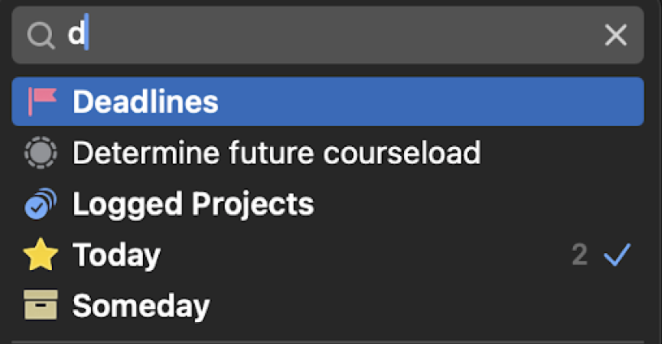
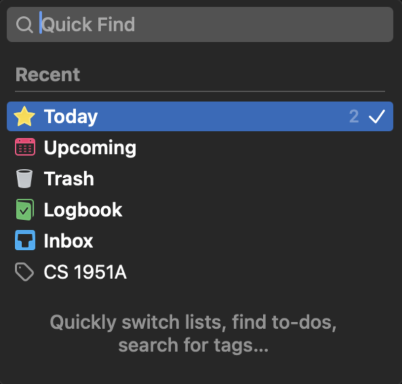
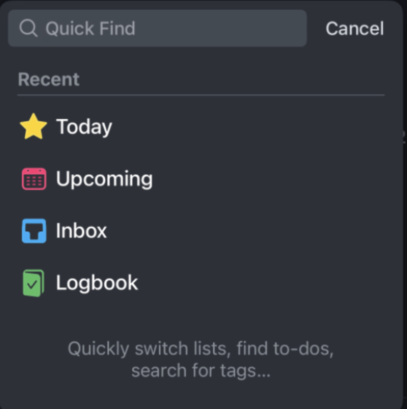
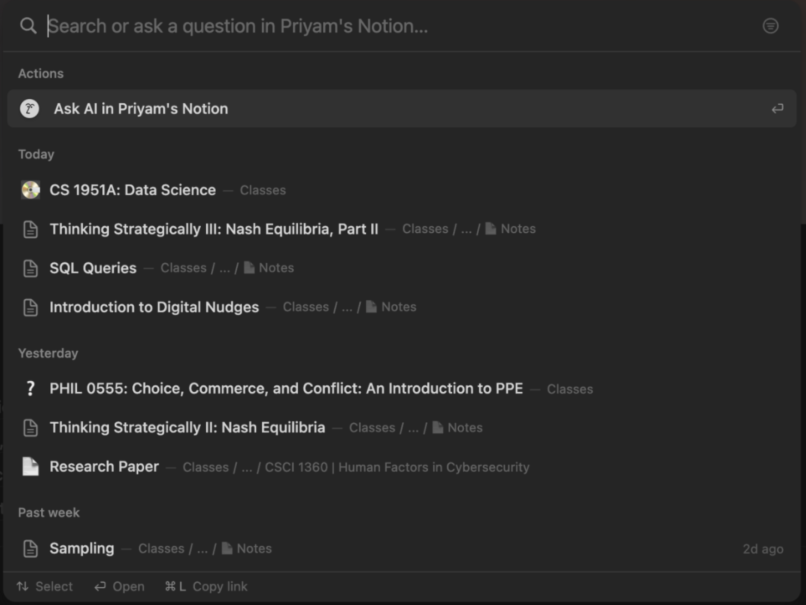
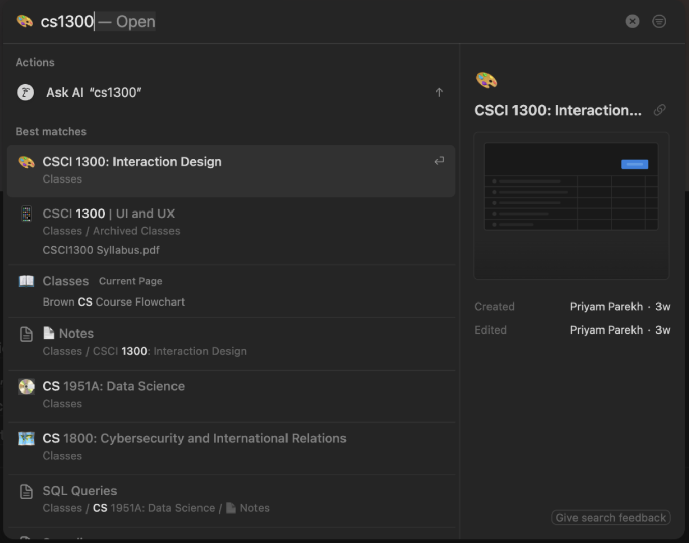
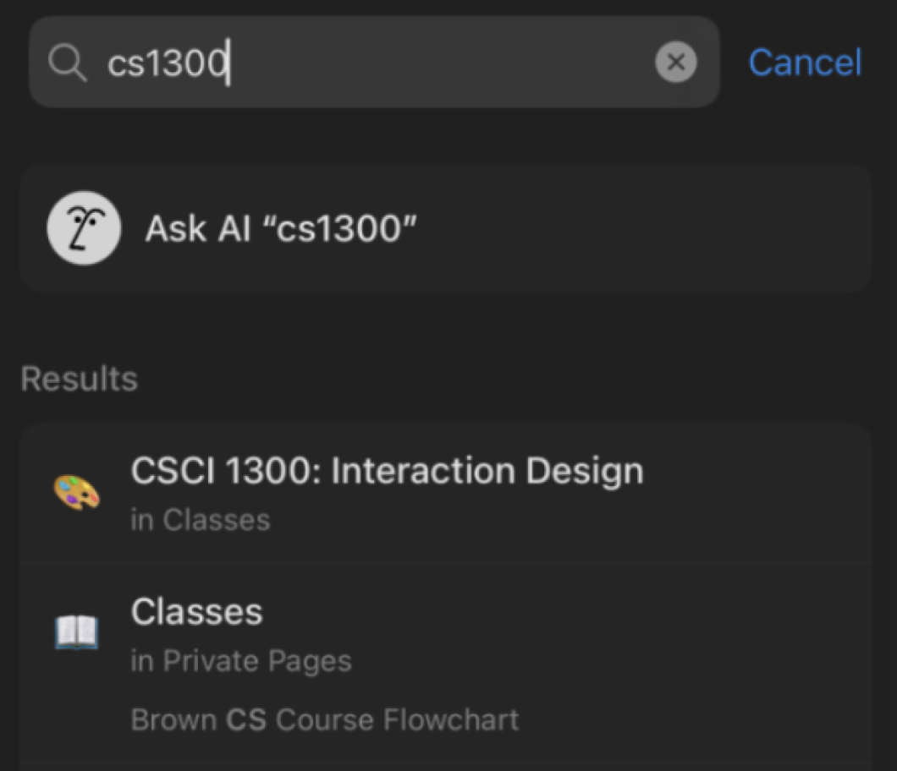
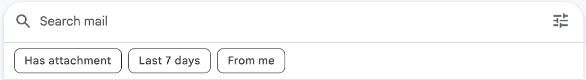
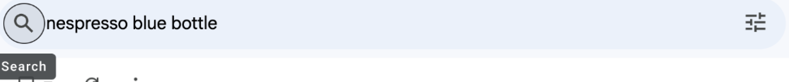
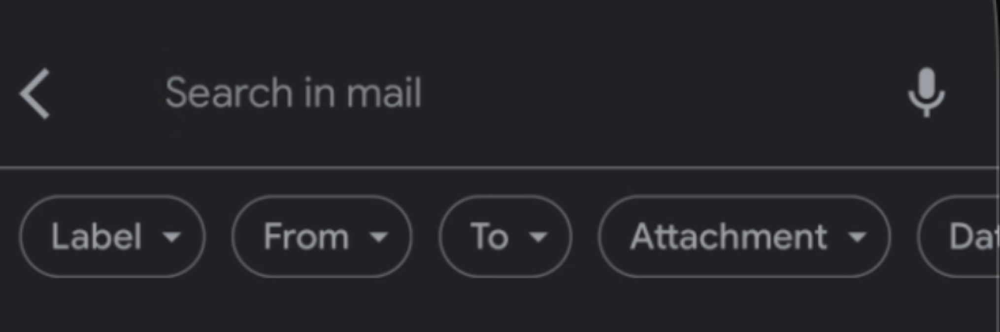

In modern UI design, accessibility plays a huge role in ensuring that all users can interact with the interface
This case study analyzes how search boxes function across 3 different applications: Things, Notion, Gmail
Things
task manager
Notion
productivity/notes
platform
Gmail
email service
I chose these 3 programs because they are well-renowned for having great design and inclusivity
I wanted to evaluate the validity of these claims through the lens of accessibility
The following UI components and table analyze how users interact with the search box through different input methods (mouse/touchpad, keyboard, and mobile)
Things
Primarily with a mouse or touchpad
With only a keyboard
Primarily on mobile/touchscreen
Notion
Primarily with a mouse or touchpad
With only a keyboard
Primarily on mobile/touchscreen

 Gmail
Gmail
Primarily with a mouse or touchpad
With only a keyboard
Primarily on mobile/touchscreen
| Things | Notion | Gmail | |
|---|---|---|---|
| Mouse/ Touchpad |
• The UI is incredibly intuitive, with a magnifying glass icon
being shown at the bottom of the application • When pressed, it immediately brings up a search field in the center of the application • When you press anywhere outside of the search field, it exits the search pop up • When the pre-selected search commands are pressed, it automatically completes it • The functionality of the search box are definitely learnable as it uses realistic iconography through the magnifying glass—a recognizable icon for search • Out of all 3 applications, this is the most simple and compact while still being accessible for users |
• To get to the search bar, the user has to open the left
sidebar and click on the magnifying glass icon that says
"Search" • This can be hard to find, especially because it's concealed within the sidebar • When clicked, it opens the search box in the middle of the screen and darkens the background • As you type, it creates suggestions based on the text • While the functionality of the search box is intuitive, the number of suggestions can be overwhelming for the user • However, it is useful that there are a plethora of recent pages that appear in the search field—essentially predicting your prompts • This UI is definitely more cluttered when compared to Things or Gmail; however, it is more feature-rich |
• The search box is prominently placed at the top of the
screen • After clicking on the search box, it provides basic suggestions and previously searched queries • The UI is intuitive and simple • It is designed to be used by the average consumer • It is fairly memorable as the Gmail design has been relatively the same for the past few years • In terms of accessibility, I would say it is ranked the highest out of all 3 platforms |
| Keyboard |
• To initiate the search box, the user can press Cmd + F which
leads to the same search box component as using the magnifying
glass • After typing a specific keyword or pre-selected search commands, the user can use the arrow keys to either move their selection up or down • This command and interaction is intuitive and follows conventional navigation • It possesses all functionality that a search box should have—especially with added smart suggestions as you type • Again, I would say that this UX ranks highly in terms of accessibility and intuitive input |
• To start the search box, the user can press Cmd + K, which
results in the search command to be executed • The user can then use the arrow keys to move up or down in the search results and use tab to switch to the filters • Once the command is learned by a user, it is much easier to access and use |
• There is no real way to use a command to open the search bar
in Gmail • However, the user can use the tab key to switch through each UI element on the screen • While inefficient, it does work as intended • This is fairly learnable and does follow basic accessibility standards |
| Mobile/ Touchscreen |
• On the Things mobile app, there are 2 ways to access the
search box • First, is to go to the main menu page and click on the top search bar • The other meethod is to swipe down from anywhere in the app • The former method is definitely more intuitive; however, the latter is meant for power users who care about efficiency and ease of access • However, after learning the swipe to search feature, it is both memorable and efficient • To cancel out of the search field, there is a cancel button on the top right and the user can also click anywhere outside of the app |
• On the Notion app, there is a magnifying glass icon in the
bottom bar which is accessible in all parts of app • The UI of the actual search box is nearly identical to the desktop app • It provides suggestions as you type and contains a cancel button to exit out of the search field in the top right • The functionality is extremely simple and is shared across a majority of mobile apps (having the search icon on the bottom bar) |
• Similar to the browser version on desktop, the mobile app
also places the search bar prominently on the
screen—positioned on the top of the screen • When pressed, it opens the same options—providing simple suggestions such as "From", "To", "Date", etc • Furthermore, it also includes the search query history • It includes an "X" to exit out of the search field on the top right • The overall search UI in the Gmail app is easy to use and intuitive • I would rank it similar to the Things app |